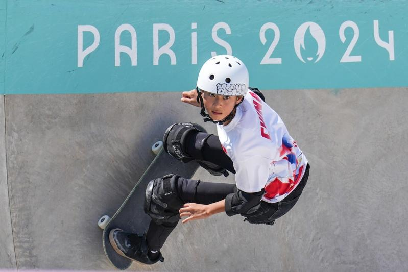

「我不是你们说的天才少女。」
尽管全红婵在东京「出道即巅峰」，在巴黎奥运会也成功摘得跳水女子10米台金牌，她却说拿金牌很不容易，全靠刻苦训练，一遍一遍地去练。
「就说抽空去参加了个奥运会吧。」
中国队年仅11岁的郑好好获得巴黎奥运会滑板女子碗池预赛第18名的成绩。当被问到将如何跟家人朋友讲述这段经历时，小姑娘觉得不能表现得太自豪。
(function (src, width) { if (window.screen.width > width) { const tag = document.createElement(‘script’) tag.onload = function () { this.setAttribute(‘loaded’, ”) } tag.async = true tag.src = src const s = document.getElementsByTagName(‘script’)[0] s.parentNode.insertBefore(tag, s) } })(“https://player.gliacloud.com/player/adgeek_worldjournal_desktop”, 600)
(function (src, width) { if (window.screen.width <= width) { const tag = document.createElement('script') tag.onload = function () { this.setAttribute('loaded', '') } tag.async = true tag.src = src const s = document.getElementsByTagName('script')[0] s.parentNode.insertBefore(tag, s) } })("https://player.gliacloud.com/player/adgeek_worldjournal_mobile", 600)
「我其实一直在唱，不是大声唱出来，就动嘴唇。」
德国乒乓球运动员考夫曼是歌手泰勒丝的歌迷，当记者问她在比赛时脑子里会想到哪首歌时，她的答案是《摆脱》，「摆脱紧张等情绪，只是集中注意力」。
「在奥运会滑滑板跟在我家楼下滑滑板没啥区别，就是人多了点。」
看看本届奥运会最年轻的参赛选手、来自中国的11岁滑板运动员郑好好对奥运赛场的最初印象吧，紧张和压力根本不存在。
「我住在希腊，我热爱希腊文化……我的血液都是100%蓝色的了。」
希腊队归化的篮球运动员沃尔克普说，他对希腊的归属感满满。
「我奶奶真的会喊‘猎豹来了’。」
美国女子跳远运动员戴维斯-伍德霍尔说，她奶奶的激励技巧就是在她起跑时让她想象有一只猎豹在后面追着她。
「浓缩的都是精华！」
中国选手莫家蝶的身高只有1米63，她在止步巴黎奥运会女子400米栏半决赛后，既惊叹于对手们高大的身材，又觉得身高不是问题。
「（我的）首届奥运会，一金一银带回家，我是知足了。」
来自圣卢西亚的阿尔弗雷德在女子100米夺金、200米摘银后表示，没什么可抱怨的，该知足了。
巴黎奥运热话题
- 刘易士都无言 美国队没人晋级跳远决赛
- 球拍被记者踩断 王楚钦：我是受害者、不想再讨论
- 穿太辣制造不恰当气氛 巴拉圭泳手被逐出选手村
- 陈梦对孙颖莎引发球迷大战 北京要整治体育界饭圈文化
- 美运动员「紫脸」是屏幕偏色？ 中体育官员「恨国言论」被查